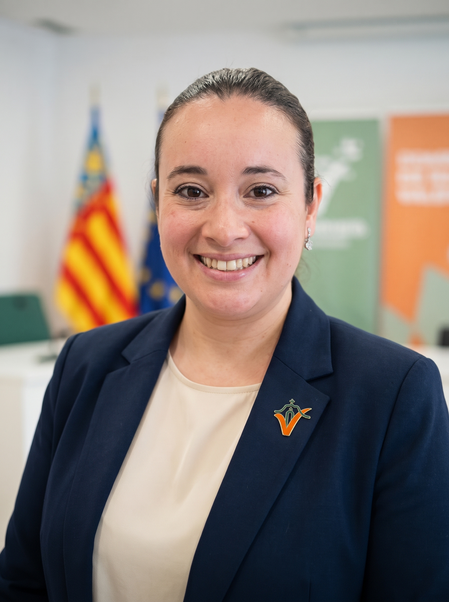
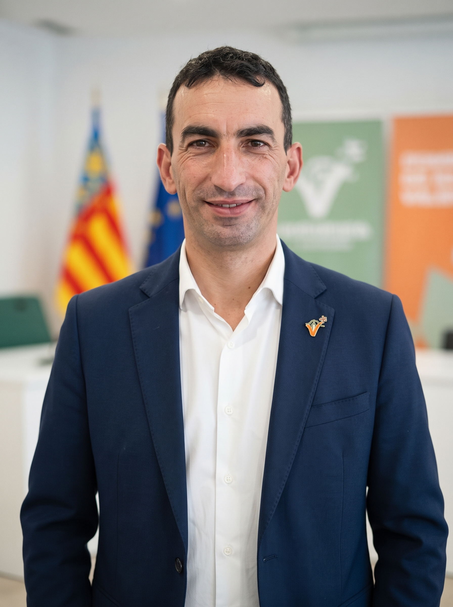
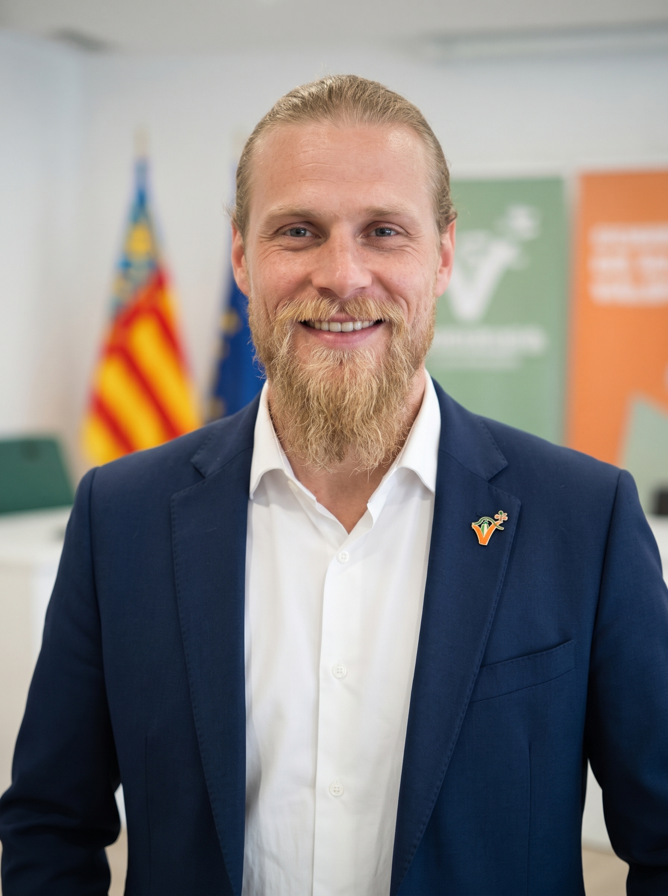
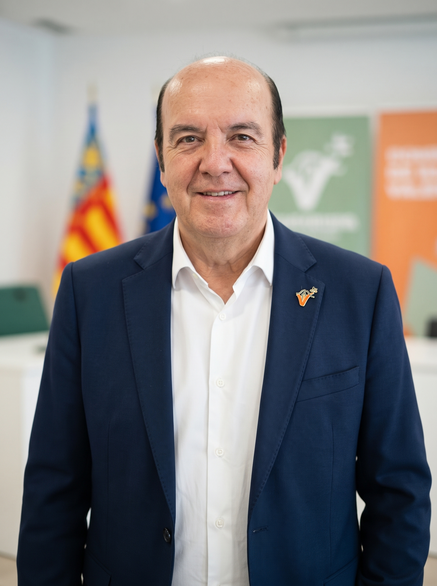

Cap de Llista Comarcal

Joan Almiñana i Vercher
Candidat a l'Alcaldia i Portaveu Comarcal
«La Valldigna té un potencial extraordinari que massa sovint ha quedat oblidat per les grans estructures partidistes. Com a veí d'esta vall, assumisc este repte amb il·lusió, humilitat i un compromís indestructible: treballar cada dia pel benestar de la nostra gent, pel nostre camp i pel nostre patrimoni comú.»
Llicenciat en Ciències Polítiques i de l'Administració i vinculat històricament al teixit associatiu, cultural i esportiu de la Valldigna, Joan és un ferm defensor de la sobirania comarcal, la transparència a les institucions i el servei directe als ciutadans.
L'Equip Comarcal
La nostra candidatura està formada per persones compromeses que coneixen pam a pam la realitat dels pobles de la Valldigna:
1. Joan Almiñana i Vercher
Cap de llista · Portaveu Comarcal
Compromís, honestedat i gestió propera per a liderar una nova etapa de progrés a la vall.

2. Maria Fons i Pellicer
Coordinació de Simat i Patrimoni Cultural
Mestra d'educació primària i activista cultural, encarregada de les propostes de patrimoni i del Monestir de Santa Maria.

3. Vicent Gascón i Palomares
Sector Agrari i Regadiu Tradicional (Benifairó)
Llaurador i membre de comunitats de regants, amb una trajectòria exemplar en la defensa de preus justos per als cítrics.

4. Pau Boix i Mascarell
Polítiques de Joventut, Vivenda i Ocupació (Tavernes)
Enginyer informàtic jove compromès amb el retorn del talent juvenil i la creació d'espais de cotreball.

5. Carles Vidal i Mahiques
Medi Ambient i Desenvolupament Sostenible (Barx / La Drova)
Guia de muntanya i ambientòleg, centrat en la preservació dels senders de la muntanya i el turisme ecològic.